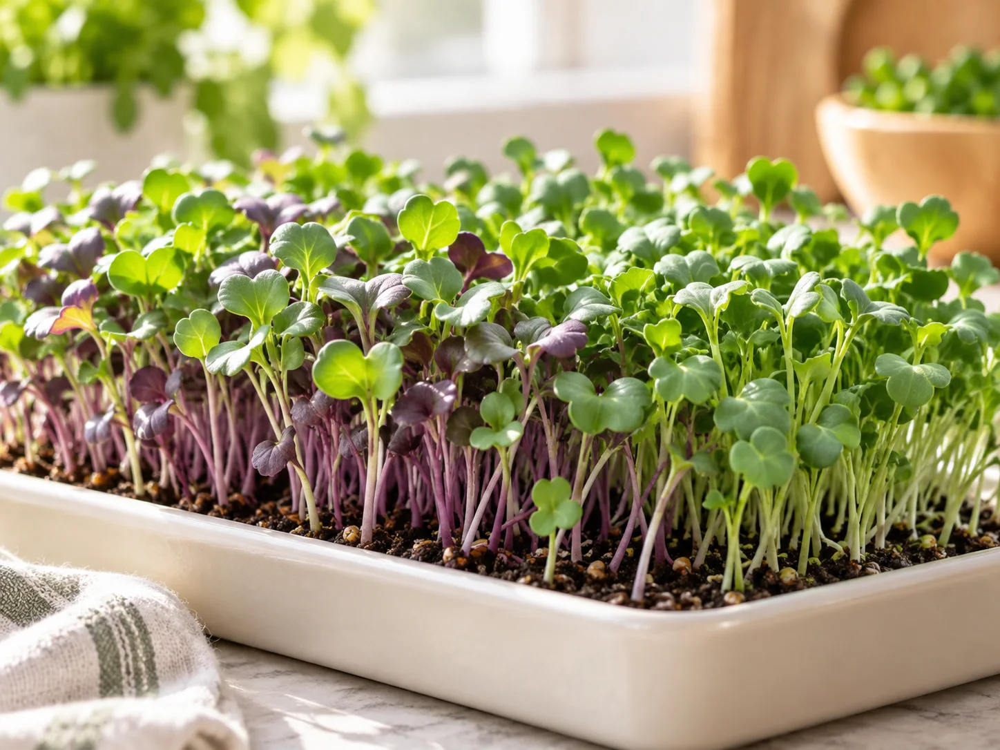
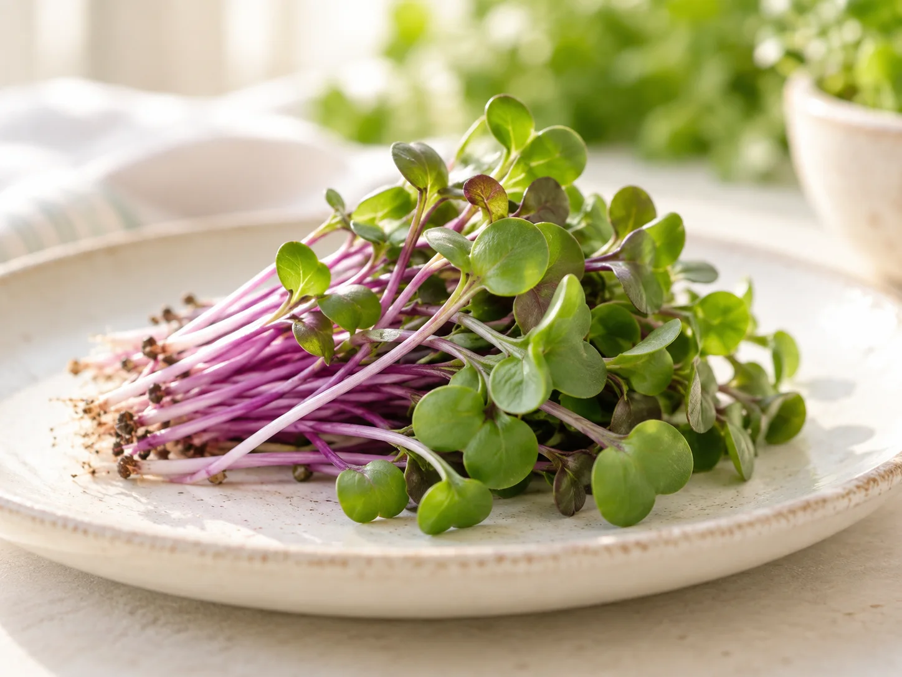
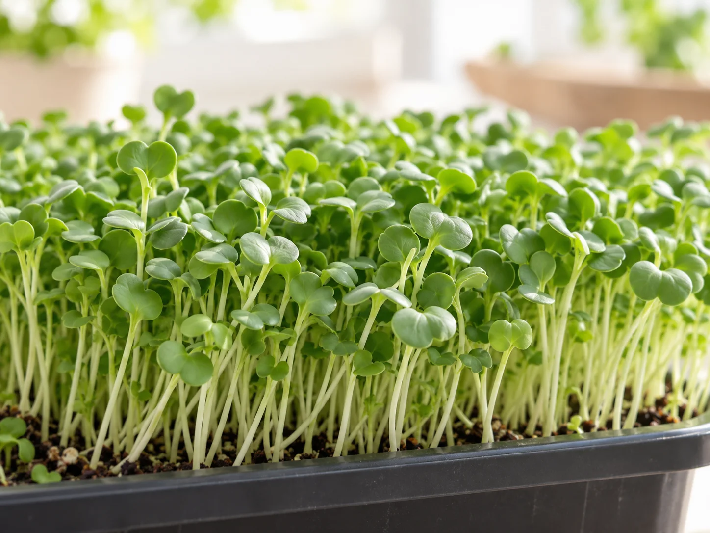
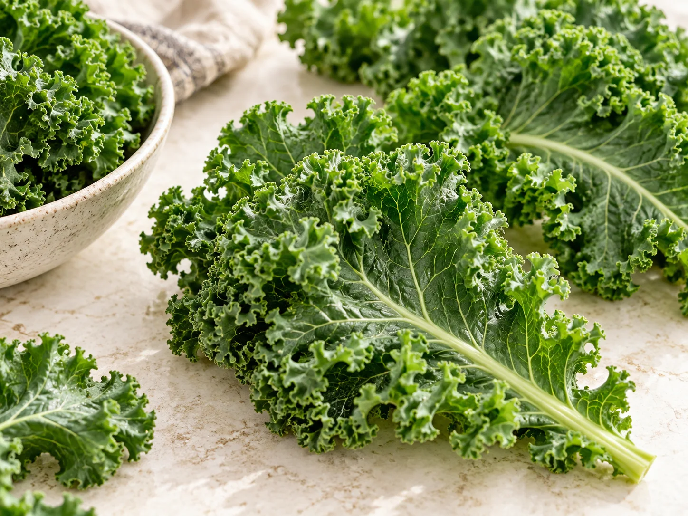
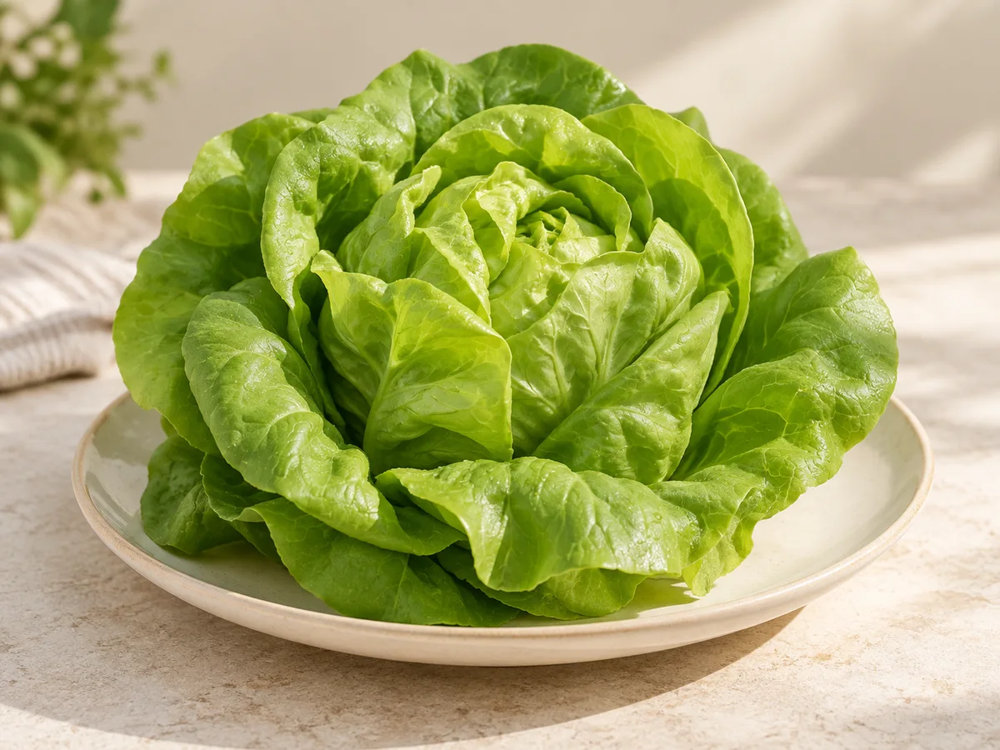
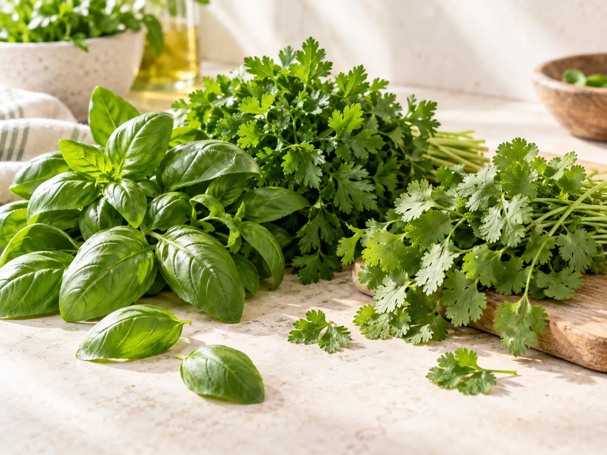
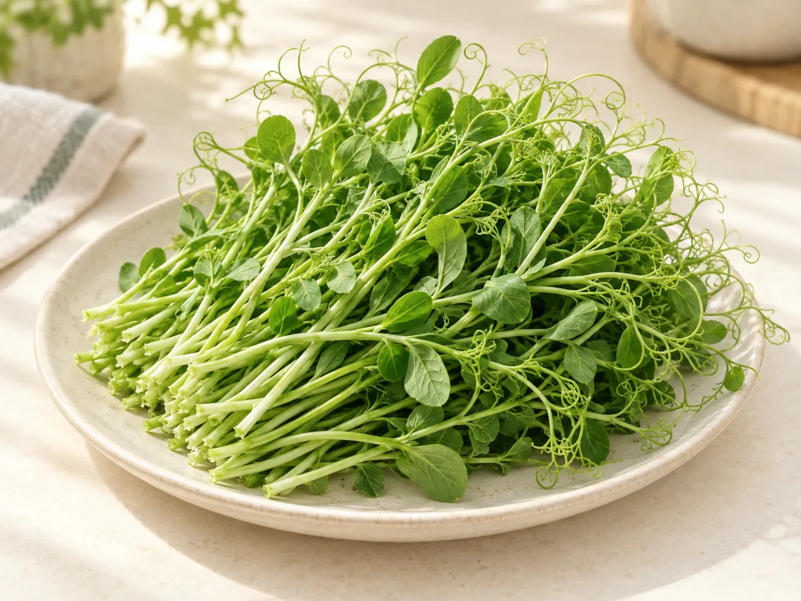
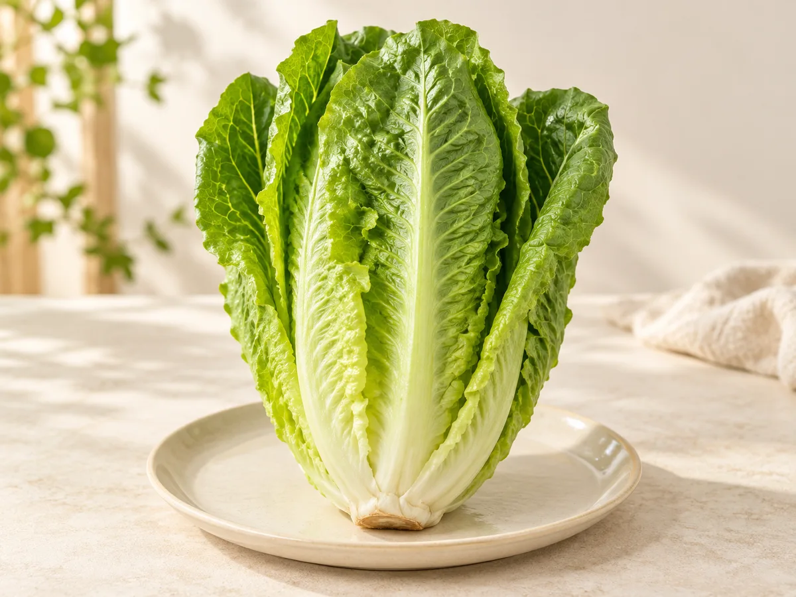
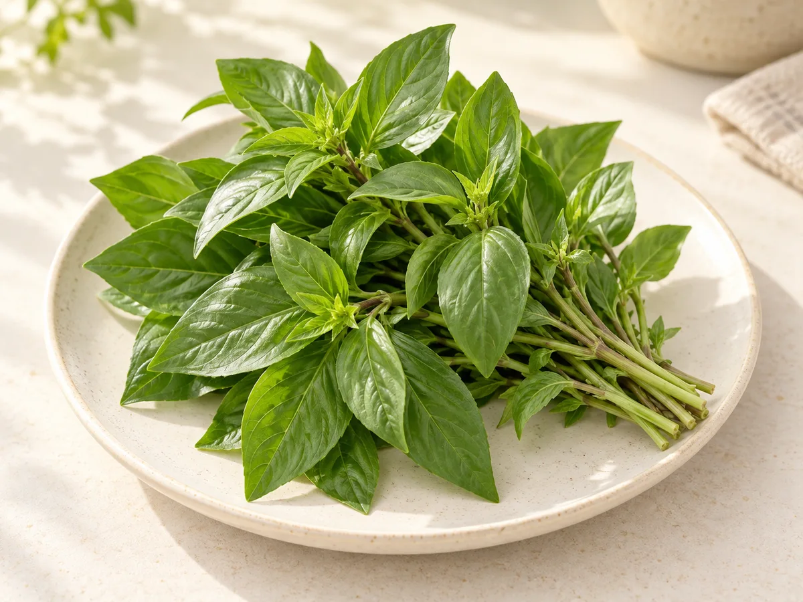
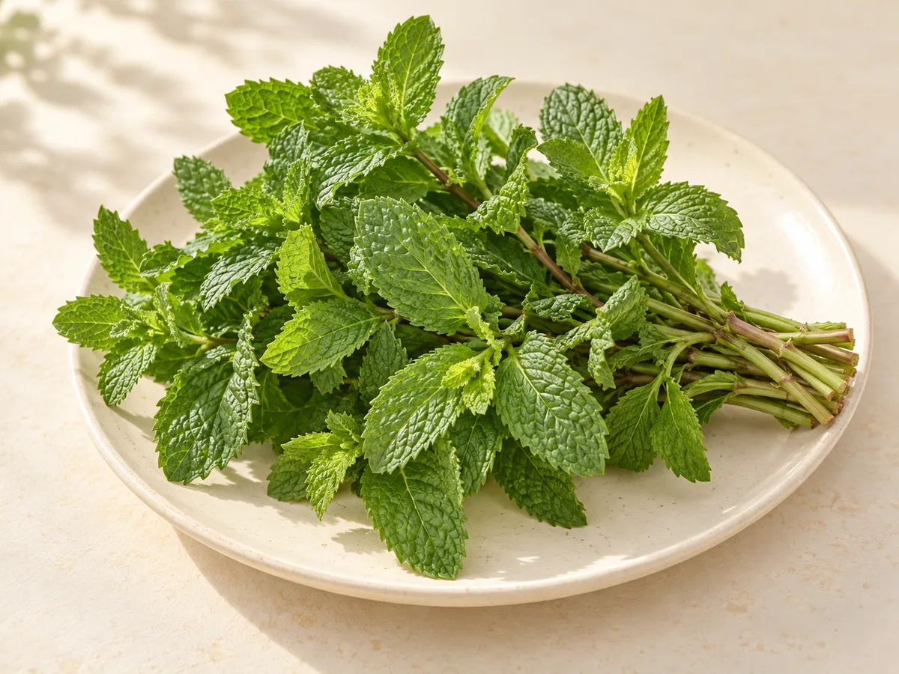

MicrogreensMicrogreens hỗn hợp
Nhiều sắc lá nhỏ trong cùng một phần rau, vị tươi và kết cấu nhẹ. Phù hợp khi bạn muốn khám phá hương vị đa dạng của microgreens.
Hương vị & kết cấu: Tươi mát, hơi cay nhẹ, giòn
Từ vị cay nhẹ của microgreens đến lá xà lách giòn mát và hương rau thơm: tìm sắc xanh hợp với bữa ăn của bạn.
10 sản phẩm

MicrogreensNhiều sắc lá nhỏ trong cùng một phần rau, vị tươi và kết cấu nhẹ. Phù hợp khi bạn muốn khám phá hương vị đa dạng của microgreens.
Hương vị & kết cấu: Tươi mát, hơi cay nhẹ, giòn

MicrogreensThân tím đỏ, lá xanh nhỏ và vị cay nhẹ tạo điểm nhấn dễ nhận ra. Một lựa chọn dành cho người thích món ăn có thêm cá tính.
Hương vị & kết cấu: Cay nhẹ, giòn, tươi

MicrogreensThân mảnh, lá xanh nhỏ, hương vị dịu và hơi đắng nhẹ. Dễ kết hợp cùng những nguyên liệu có vị thanh để giữ nét riêng của rau.
Hương vị & kết cấu: Nhẹ, hơi đắng, tươi

Rau ăn láLá xanh có viền xoăn và kết cấu rõ, mang vị rau đậm. Thích hợp để cắt nhỏ, kết hợp trong món xào hoặc các món rau theo khẩu vị.
Hương vị & kết cấu: Đậm vị rau, hơi ngọt

Rau ăn láCác lớp lá mềm ôm thành búp, vị thanh và giòn mát. Dáng lá thuận tiện cho món cuốn, bánh mì và đĩa rau ăn kèm.
Hương vị & kết cấu: Ngọt nhẹ, mát

Rau gia vịHúng quế, mùi tây và rau mùi mang những lớp hương riêng. Thêm từng ít một để tạo điểm nhấn mà vẫn giữ sự cân bằng cho món ăn.
Hương vị & kết cấu: Thơm mạnh, tươi sáng

MicrogreensNgọn non có tua cuốn, vị đậu nhẹ và thân giòn. Một lựa chọn khác cho người muốn khám phá rau mầm.
Hương vị & kết cấu: Giòn, vị đậu nhẹ

Rau ăn láLá dài, gân rõ và kết cấu giòn. Phù hợp với món rau trộn hoặc cắt nhỏ dùng trong món cuốn.
Hương vị & kết cấu: Giòn, vị thanh

Rau gia vịLá mềm và hương thơm rõ. Thêm một lượng nhỏ để món quen có thêm lớp hương riêng.
Hương vị & kết cấu: Thơm, lá mềm

Rau gia vịLá có mép răng cưa và mùi thơm mát. Dùng để tạo điểm nhấn cho món ăn hoặc đồ uống.
Hương vị & kết cấu: Thơm mát, lá mềm
Một bữa ăn hấp dẫn thường có sự cân bằng giữa hương vị và kết cấu. Rau lá mềm làm nền cho món cuốn; một ít rau gia vị tạo điểm nhấn; microgreens mang đến những chiếc lá nhỏ và vị riêng. Không nhất thiết phải chọn thật nhiều loại, chỉ cần hiểu vai trò của từng nhóm.
Bộ sưu tập Ươm Xanh tập trung vào ba nhóm: microgreens, rau ăn lá và rau gia vị. Bạn có thể lọc theo nhóm, xem đặc điểm từng sản phẩm rồi chọn cách kết hợp phù hợp với khẩu vị gia đình. Những gợi ý dưới đây là điểm khởi đầu để bạn sáng tạo trong căn bếp của mình.
Những lá rau non nhỏ gọn giúp món ăn thêm màu sắc và kết cấu. Cải củ đỏ có vị cay rõ hơn; bông cải dịu hơn; hỗn hợp phù hợp khi bạn thích sự đa dạng. Chọn theo hương vị bạn muốn nhấn mạnh trong món.
Xà lách búp bơ có lá mềm và dáng ôm, gợi ý cho món cuốn và đĩa rau ăn kèm. Cải xoăn có kết cấu rõ hơn, phù hợp để cắt nhỏ và kết hợp trong các món chế biến theo khẩu vị.
Húng quế, mùi tây và rau mùi mang cá tính khác nhau. Chỉ một lượng vừa đủ cũng có thể đổi cảm nhận của món ăn. Chọn một mùi hương làm chủ đạo rồi thêm dần để món vẫn cân bằng.
Bữa sáng gọn gàng. Bánh mì, phần nhân quen thuộc và rau theo sở thích tạo nên một lựa chọn dễ thay đổi mỗi ngày. Lá xà lách mang lại độ giòn mát; rau gia vị giúp món có dấu ấn riêng mà không cần thêm quá nhiều thành phần.
Bữa trưa nhiều màu sắc. Bắt đầu với một phần tinh bột, một món đạm và các loại rau khác nhau. Cân nhắc kết hợp nguyên liệu mềm với giòn, vị nhẹ với vị đậm; thêm nước xốt từng chút để giữ được hương vị của rau.
Bữa tối cùng gia đình. Một đĩa rau ăn kèm hay món rau chế biến theo thói quen có thể nối các món trên bàn. Thay đổi nhóm rau qua từng bữa là cách đơn giản để thực đơn bớt lặp lại, ngay cả khi cách nấu vẫn quen thuộc.
Xem mô tả hương vị trong từng sản phẩm. Nếu thích vị nhẹ, bạn có thể tìm hiểu mầm bông cải; nếu muốn một điểm nhấn cay hơn, xem cải củ đỏ. Bắt đầu với một loại giúp bạn dễ nhận ra mình thích gì.
Không. Chọn theo món sẽ nấu và số người ăn. Một hoặc hai loại hợp khẩu vị, dùng hết trong kế hoạch bữa ăn, thường thuận tiện hơn một danh sách dài chưa biết cách kết hợp.
Liên hệ Ươm Xanh để trao đổi về loại rau, nhu cầu sử dụng và thời điểm bạn cần. Trang này giúp bạn khám phá đặc điểm sản phẩm; thông tin phù hợp cho nhu cầu cụ thể sẽ được trao đổi trực tiếp.
Kể cho Ươm Xanh về món bạn muốn làm và loại rau bạn đang tìm.
Đăng ký nhận tư vấnKhám phá lô xà lách búp bơ UX-260915-01, từ chọn hạt giống đến đóng gói.
Dữ liệu mô phỏng phục vụ dự án học tập
Xem lô sản phẩm mẫu